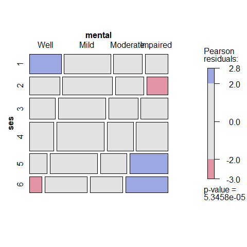
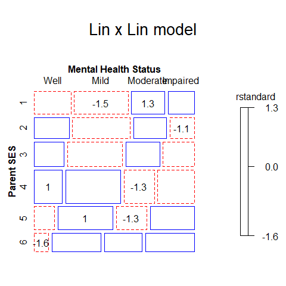

Extensions and additions to vcd: Visualizing Categorical Data
Version 0.8-4
This package provides additional data sets, documentation, and many functions designed to extend the vcd package for Visualizing Categorical Data and the gnm package for Generalized Nonlinear Models. In particular, vcdExtra extends mosaic, assoc and sieve plots from vcd to handle glm() and gnm() models and adds a 3D version in mosaic3d().
vcdExtra is a support package for the book Discrete Data Analysis with R (DDAR) by Michael Friendly and David Meyer. There is also a web site for DDAR with all figures and code samples from the book. It is also used in my graduate course, Psy 6136: Categorical Data Analysis.
Installation
Get the released version from CRAN:
install.packages("vcdExtra")The development version can be installed to your R library directly from the GitHub repo via:
if (!require(remotes)) install.packages("remotes")
remotes::install_github("friendly/vcdExtra", build_vignettes = TRUE)Overview
The original purpose of this package was to serve as a sandbox for introducing extensions of mosaic plots and related graphical methods that apply to loglinear models fitted using MASS::loglm(), generalized linear models using stats::glm() and the related, generalized nonlinear models fitted with gnm() in the gnm package.
A related purpose was to fill in some holes in the analysis of categorical data in R, not provided in base R, vcd, or other commonly used packages.
Highlights
mosaic plot extensions
The method
mosaic.glm()extends themosaic.loglm()method in the vcd package to this wider class of models, e.g., models for ordinal factors, which can’t be handled withMASS::loglm(). This method also works for the generalized nonlinear models fit with the gnm package, including models for square tables and models with multiplicative associations (RC models).mosaic3d()introduces a 3D generalization of mosaic displays using the rgl package.
model extensions
A new class,
glmlist, is introduced for working with collections of glm objects, e.g.,Kway()for fitting all K-way models from a basic marginal model, andLRstats()for brief statistical summaries of goodness-of-fit for a collection of models.Similarly, for loglinear models fit using
MASS::loglm(), the functionseq_loglm()fits a series of sequential models to the 1-, 2-, … n-way marginal tables, corresponding to a variety of types of models for joint, conditional, mutual, … independence. It returns an object of classloglmlist, each of which is a classloglmobject. The functionseq_mosaic()generates the mosaic plots and other plots in thevcd::strucplot()framework.For square tables with ordered factors,
Crossings()supplements the specification of terms in model formulas usinggnm::Symm(),gnm::Diag(),gnm::Topo(),etc. in the gnm package.
Other additions
- many new data sets; use
datasets("vcdExtra")to see a list with titles and descriptions. The vignette,vignette("datasets", package="vcdExtra")provides a classification of these according to methods of analysis.
vcdExtra::datasets("vcdExtra")[,1]
## [1] "Abortion" "Accident" "AirCrash" "Alligator"
## [5] "Asbestos" "Bartlett" "Burt" "Caesar"
## [9] "Cancer" "Cormorants" "CyclingDeaths" "DaytonSurvey"
## [13] "Depends" "Detergent" "Donner" "Draft1970"
## [17] "Draft1970table" "Dyke" "Fungicide" "GSS"
## [21] "Geissler" "Gilby" "Glass" "HairEyePlace"
## [25] "Hauser79" "Heart" "Heckman" "HospVisits"
## [29] "HouseTasks" "Hoyt" "ICU" "JobSat"
## [33] "Mammograms" "Mental" "Mice" "Mobility"
## [37] "PhdPubs" "ShakeWords" "TV" "Titanicp"
## [41] "Toxaemia" "Vietnam" "Vote1980" "WorkerSat"
## [45] "Yamaguchi87"- a collection of tutorial vignettes. In the installed package, they can be viewed using
browseVignettes(package = "vcdExtra");
tools::getVignetteInfo("vcdExtra")[,c("File", "Title")] |> knitr::kable()| File | Title |
|---|---|
| continuous.Rmd | Continuous predictors |
| creating.Rmd | Creating and manipulating frequency tables |
| datasets.Rmd | Datasets for categorical data analysis |
| demo-housing.Rmd | Demo - Housing Data |
| loglinear.Rmd | Loglinear Models |
| mosaics.Rmd | Mosaic plots |
| tests.Rmd | Tests of Independence |
- a few useful utility functions for manipulating categorical data sets and working with models for categorical data.
Examples
These README examples simply provide illustrations of using some of the package functions in the context of loglinear models for frequency tables fit using glm(), including models for structured associations taking ordinality into account.
The dataset Mental is a data frame frequency table representing the cross-classification of mental health status (mental) of 1660 young New York residents by their parents’ socioeconomic status (ses). Both are ordered factors.
data(Mental)
str(Mental)
## 'data.frame': 24 obs. of 3 variables:
## $ ses : Ord.factor w/ 6 levels "1"<"2"<"3"<"4"<..: 1 1 1 1 2 2 2 2 3 3 ...
## $ mental: Ord.factor w/ 4 levels "Well"<"Mild"<..: 1 2 3 4 1 2 3 4 1 2 ...
## $ Freq : int 64 94 58 46 57 94 54 40 57 105 ...
# show as frequency table
(Mental.tab <- xtabs(Freq ~ ses+mental, data=Mental))
## mental
## ses Well Mild Moderate Impaired
## 1 64 94 58 46
## 2 57 94 54 40
## 3 57 105 65 60
## 4 72 141 77 94
## 5 36 97 54 78
## 6 21 71 54 71Independence model
Fit the independence model, Freq ~ mental + ses, using glm(..., family = poisson) This model is equivalent to the chisq.test(Mental) for general association; it does not take ordinality into account. LRstats() provides a compact summary of fit statistics for one or more models.
indep <- glm(Freq ~ mental + ses,
family = poisson, data = Mental)
LRstats(indep)
## Likelihood summary table:
## AIC BIC LR Chisq Df Pr(>Chisq)
## indep 209.59 220.19 47.418 15 3.155e-05 ***
## ---
## Signif. codes: 0 '***' 0.001 '**' 0.01 '*' 0.05 '.' 0.1 ' ' 1mosaic.glm() is the mosaic method for glm objects. The default mosaic display for these data:
mosaic(indep)
It is usually better to use standardized residuals (residuals_type="rstandard") in mosaic displays, rather than the default Pearson residuals. Here we also add longer labels for the table factors (set_varnames) and display the values of residuals (labeling=labeling_residuals) in the cells.
The strucplot formula argument, ~ ses + mental here gives the order of the factors in the mosaic display, not the statistical model for independence. That is, the unit square is first split by ses, then by mental within each level of ses.
# labels for table factors
long.labels <- list(set_varnames = c(mental="Mental Health Status",
ses="Parent SES"))
mosaic(indep, formula = ~ ses + mental,
residuals_type="rstandard",
labeling_args = long.labels,
labeling=labeling_residuals)
The opposite-corner pattern of the residuals clearly shows that association between Parent SES and mental health depends on the ordered levels of the factors: higher Parent SES is associated with better mental health status. A principal virtue of mosaic plots is to show the pattern of association that remains after a model has been fit, and thus help suggest a better model.
Ordinal models
Ordinal models use numeric scores for the row and/or column variables. These models typically use equally spaced integer scores. The test for association here is analogous to a test of the correlation between the frequency-weighted scores, carried out using CMHtest().
In the data, ses and mental were declared to be ordered factors, so using as.numeric(Mental$ses) is sufficient to create a new Cscore variable. Similarly for the numeric version of mental, giving Rscore.
Cscore <- as.numeric(Mental$ses)
Rscore <- as.numeric(Mental$mental)Using these, the term Rscore:Cscore represents an association constrained to be linear x linear; that is, the slopes for profiles of mental health status are assumed to vary linearly with those for Parent SES. (This model asserts that only one parameter (a local odds ratio) is sufficient to account for all association, and is also called the model of “uniform association”.)
# fit linear x linear (uniform) association. Use integer scores for rows/cols
Cscore <- as.numeric(Mental$ses)
Rscore <- as.numeric(Mental$mental)
linlin <- glm(Freq ~ mental + ses + Rscore:Cscore,
family = poisson, data = Mental)
mosaic(linlin, ~ ses + mental,
residuals_type="rstandard",
labeling_args = long.labels,
labeling=labeling_residuals,
suppress=1,
gp=shading_Friendly,
main="Lin x Lin model")
Note that the test for linear x linear association consumes only 1 degree of freedom, compared to the (r-1)*(c-1) = 15 degrees of freedom for general association.
anova(linlin, test="Chisq")
## Analysis of Deviance Table
##
## Model: poisson, link: log
##
## Response: Freq
##
## Terms added sequentially (first to last)
##
##
## Df Deviance Resid. Df Resid. Dev Pr(>Chi)
## NULL 23 217.400
## mental 3 113.525 20 103.875 < 2.2e-16 ***
## ses 5 56.457 15 47.418 6.543e-11 ***
## Rscore:Cscore 1 37.523 14 9.895 9.035e-10 ***
## ---
## Signif. codes: 0 '***' 0.001 '**' 0.01 '*' 0.05 '.' 0.1 ' ' 1Other models are possible between the independence model, Freq ~ mental + ses, and the saturated model Freq ~ mental + ses + mental:ses. The update.glm() method make these easy to specify, as addition of terms to the independence model.
# use update.glm method to fit other models
linlin <- update(indep, . ~ . + Rscore:Cscore)
roweff <- update(indep, . ~ . + mental:Cscore)
coleff <- update(indep, . ~ . + Rscore:ses)
rowcol <- update(indep, . ~ . + Rscore:ses + mental:Cscore)Compare the models: For glm objects, the print and summary methods give too much information if all one wants to see is a brief summary of model goodness of fit, and there is no easy way to display a compact comparison of model goodness of fit for a collection of models fit to the same data.
LRstats() provides a brief summary for one or more models fit to the same dataset. The likelihood ratio χ2 values (LR Chisq)test lack of fit. By these tests, none of the ordinal models show significant lack of fit. By the AIC and BIC statistics, the linlin model is the best, combining parsimony and goodness of fit.
LRstats(indep, linlin, roweff, coleff, rowcol)
## Likelihood summary table:
## AIC BIC LR Chisq Df Pr(>Chisq)
## indep 209.59 220.19 47.418 15 3.155e-05 ***
## linlin 174.07 185.85 9.895 14 0.7698
## roweff 174.45 188.59 6.281 12 0.9013
## coleff 179.00 195.50 6.829 10 0.7415
## rowcol 179.22 198.07 3.045 8 0.9315
## ---
## Signif. codes: 0 '***' 0.001 '**' 0.01 '*' 0.05 '.' 0.1 ' ' 1The anova.glm() function gives tests of nested models.
anova(indep, linlin, roweff, test = "Chisq")
## Analysis of Deviance Table
##
## Model 1: Freq ~ mental + ses
## Model 2: Freq ~ mental + ses + Rscore:Cscore
## Model 3: Freq ~ mental + ses + mental:Cscore
## Resid. Df Resid. Dev Df Deviance Pr(>Chi)
## 1 15 47.418
## 2 14 9.895 1 37.523 9.035e-10 ***
## 3 12 6.281 2 3.614 0.1641
## ---
## Signif. codes: 0 '***' 0.001 '**' 0.01 '*' 0.05 '.' 0.1 ' ' 1